漫画版
第三話「蔵の市の壺と四通の鑑定書」
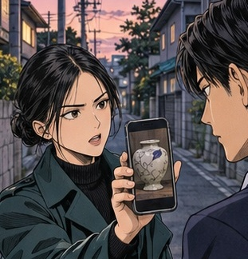
帰り道・店主の電話の直後
青い葉が一枚。店主に写真を送って、見てもらおう。
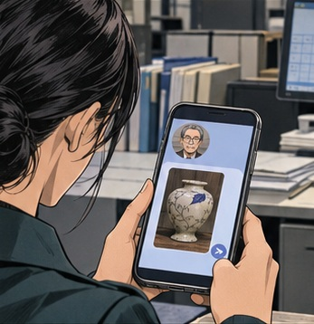
店主からの返信 「うちの壺かもしれません。現物を見せてください」
翌朝・古物市場
二人は店の並ぶ通路を抜け、壺を預かっている売り場へ向かった。
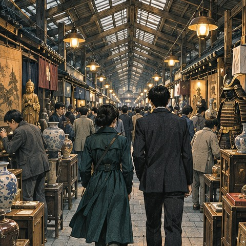
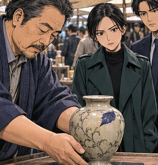
写真の壺はこちらです。持ち込まれた時の書類もあります。
1 / 4
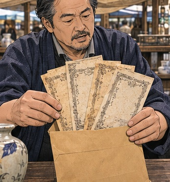
壺に添えられていた四通の鑑定書
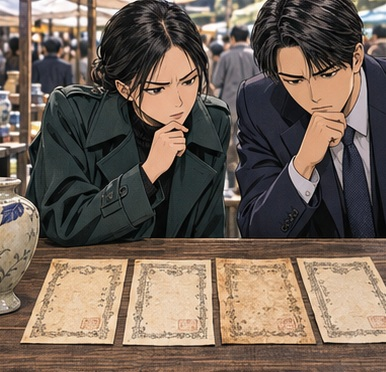
印のかすれ方も、文字の癖も似てますね。
日付も並べて確かめよう。
| 一通目 | 1892年2月29日 |
|---|---|
| 二通目 | 1896年2月29日 |
| 三通目 | 1900年2月29日 |
| 四通目 | 1904年2月29日 |
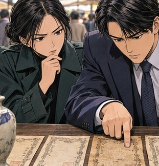
四年おきに、どれも二月二十九日。日付は合っていそうですね。
2 / 4
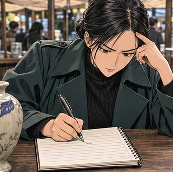
四年おきに見えるね。年の数字をもう一度見て。
2月27日2月28日3月1日
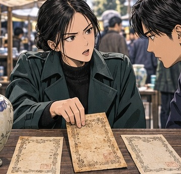
待って。三通目は1900年。
百で割り切れるのに、四百では割り切れない。1900年には二月二十九日がない！

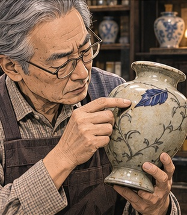
店主は壺をそっと回し、青い葉の先に指を止めた。
市場に着いた蔵の市の店主が、壺を確かめる。
葉の先の釉薬が少し途切れている。うちの壺です。
3 / 4
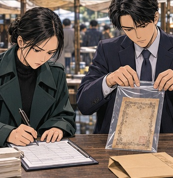
出所を偽った可能性がある。三通目を分けて、持ち込んだ人を確認しよう。

壺の出所をたどれるよう、市場の全景も記録に残した。
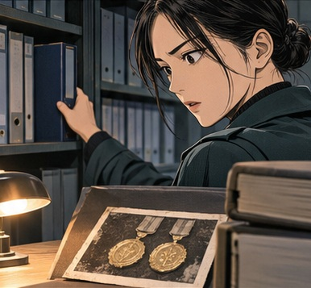
その夕方・資料室。壺の資料を収め、朝倉は残る二枚のメダルの照会記録を開いた。
4 / 4